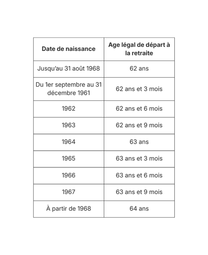

Le système de retraite en France The pension system in France
Le système de retraite est obligatoire et fonctionne par répartition. Chaque employé·e ainsi que son employeur·euse cotisent pour la retraite de l’employé·e en fonction de son salaire, et les cotisations versées aujourd’hui financent les pensions des retraité·es actuel·les. The pension system in France is mandatory and operates on a pay-as-you-go basis. Both employees and employers contribute according to the employee’s salary, and current contributions finance the pensions of today’s retirees.
Le montant de la pension perçue dépend des professions exercées, de l’âge légal de départ à la retraite et de la durée de la carrière. The level of pension benefits depends on the occupations held, the legal retirement age, and the length of an individual’s working career.

L’âge légal de départ à la retraite correspond à l’âge à partir duquel un·e salarié·e peut percevoir une pension. L’âge de la retraite à taux plein, fixé à 67 ans, allows individuals to receive a full pension regardless of contribution length. The legal retirement age refers to the minimum age at which an employee can start receiving a pension. The full pension age, set at 67, allows individuals to receive full pension benefits regardless of contribution duration.
Décalage de l’âge légal de départ à la retraite depuis 2023 Increase in the legal retirement age since 2023
La réforme des retraites appliquée à partir du 1er septembre 2023 comprend de nombreuses mesures. Sa suspension jusqu’au 31 août 2026 a été votée par l’Assemblée nationale le 16 décembre 2025. The pension reform implemented from September 1st, 2023 includes a range of measures. Its suspension until August 31st, 2026 was voted by the National Assembly on December 16th, 2025.
The main measure concerns the legal retirement age, which is gradually increasing from 62 to 64 by 2030. The applicable retirement age therefore depends on the employee’s year of birth: The main provision of the reform concerns the legal retirement age, which is gradually increasing from 62 to 64 by 2030. As a result, the applicable retirement age depends on the employee’s year of birth:

Les ruptures conventionnelles Mutual agreement terminations
[ … ] [ … ]